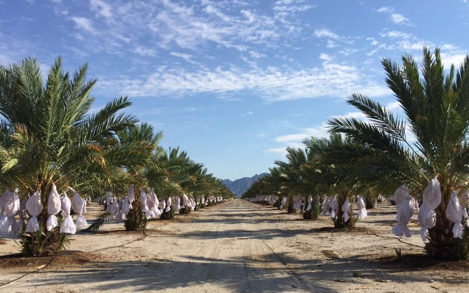

Medjool Dates – “King of Dates”
Today I want to share about the famous large, soft, moist, Medjool date/palm tree. I use the word ‘famous’ because Medjool dates are one of the top fruits used in the raw culinary world for their health benefits, natural sweetness, and binding qualities in recipes. Did you know that Medjool dates are FRESH FRUIT? Most people think of dates as dried fruit, but when they are harvested from the date palm, they are cleaned, sorted, and packaged right away. There’s no processing, and they’re never physically or chemically dried. So where do they originate? How do they grow? Let’s find out!

(photo courtesy of Naked Dates)
These trees can live to the age of roughly 200 years, and they eventually reach heights of over 80 feet tall. Mature female date palms yield anywhere from 100 to 250 pounds of dates per palm each year. The Medjool date is most well known for its unusually large size (it can grow to about three inches long) and its delicious flavor. Even though it is classified as a soft date, the Medjool date is firmer and more resilient than most other soft dates, making it an excellent choice for commercial production.
Labor Intensive!
After reading through this post, I hope you have a greater appreciation for every date you use and enjoy!
- Pollination is typically by hand. Pollen is collected in the spring from male trees and is applied to the buds on female trees. Both tasks are completed by hand.
- During the ripening stage, each cluster is hand-bagged. Sometimes over 100,000 bags are needed!
- During harvest, each bag is lifted, and the ripe dates are removed. But not all dates ripen at the same time, so after removing the ripe dates, they pull the bag back down and recheck it within five to seven days, check again, remove what is ripe, pull the bag down, check in five to seven days. This process can be repeated up to five times.
Hababuk (pollination) Stage
There are male date palms and female date palms. The female palms are the only ones that produce fruit. The male date palm has flowers that produce the pollen, and the female date palm has flowers that will become dates if they are pollinated. To transfer the pollen from the male to the female tree it is crucial for them to be near one another, plus we need the help of either the bees, insects and/or the wind. BUT often, this still isn’t enough, and the dates are pollinated by hand. One male palm can pollinate 48 to 50 female trees.
Kimri Stage
- At this stage, the fruit is quite hard, the color is apple green, and it is not suitable for eating.
- The kimri stage lasts for about five months.
- During this stage, the fruit grows from a small green berry to an almost full-sized green date. It is the longest stage of growth and development and lasts a total of nine to fourteen weeks, depending on varieties.
- During the kimri stage, roughly 60-75% of the Medjool dates are thinned around week nine to week twelve, causing the remaining fruit to grow extra large.
Khalal Stage
- In late kimri or early Khalal, the fruit bunches are bagged in either nylon or poly-cotton blend bags. These bags keep the ripening dates protected from rain, birds, and sunburn. The bags are left open at the bottom.
- The second ripening stage is the Khalal stage, when the dates have grown to their maximum size and turn yellowish or reddish depending on the specific date variety.
- It lasts three to five weeks, depending on varieties, and is the stage where the date fruit reaches its maximum weight and size. Sugar is rapidly increasing, associated with a decrease in water content.
Rhutab Stage
- The dates begin to soften and lose their bright colors, turning brown.
Tamar Stage
- The date becomes fully mature during the tamar stage and turns a deep brown color.
- Most date varieties are eaten at the fully mature tamar stage, although some of the very soft varieties like the Barhi dates and the Halawi dates are also enjoyed at the Khalal stage when they are sweet and crunchy.
- Tamar is the harvesting stage where the bottom of each bag is opened, pulled up, and the ripe fruit is harvested. The bag is replaced, and harvesting is repeated in five to seven days. This process may be repeated four or five times to collect dates at the proper stage of ripeness.
Harvest Time
- Depending on the date farms and how tall their trees are, harvesting is usually done by standing on ladders, or they may use a U-Shaped basket on a forklift to reach the dates.
- Dates are harvested into a tarp circle and dumped into trays.
- As I mentioned above, Medjool dates are considered fresh fruit. After harvesting, they are cleaned, sorted, and packaged right away. There’s no processing, and they’re never physically or chemically dried.
I hope you had fun and learned something new as you read through this post. I thoroughly enjoy researching where our foods come from and how they end up on our plate. Many blessings, amie sue

© AmieSue.com